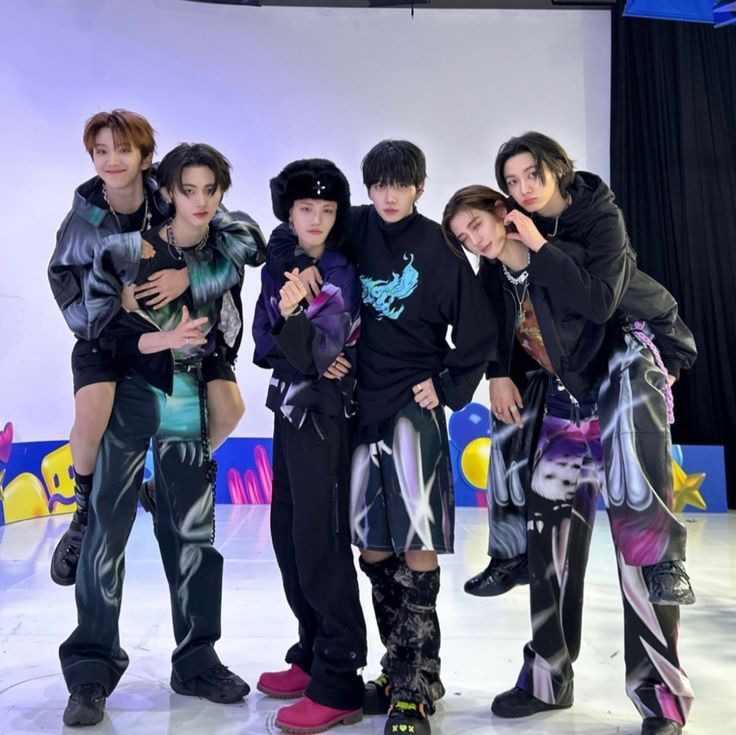
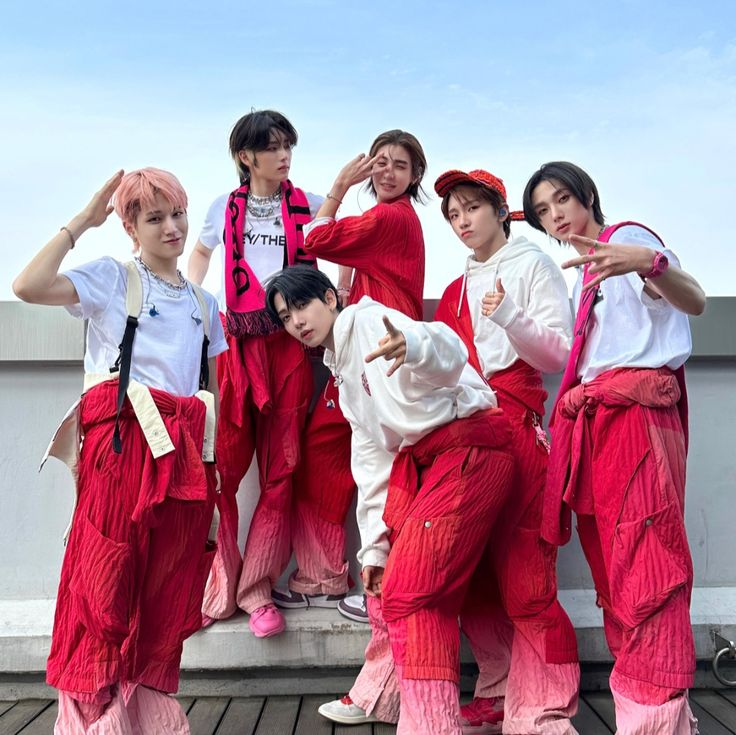
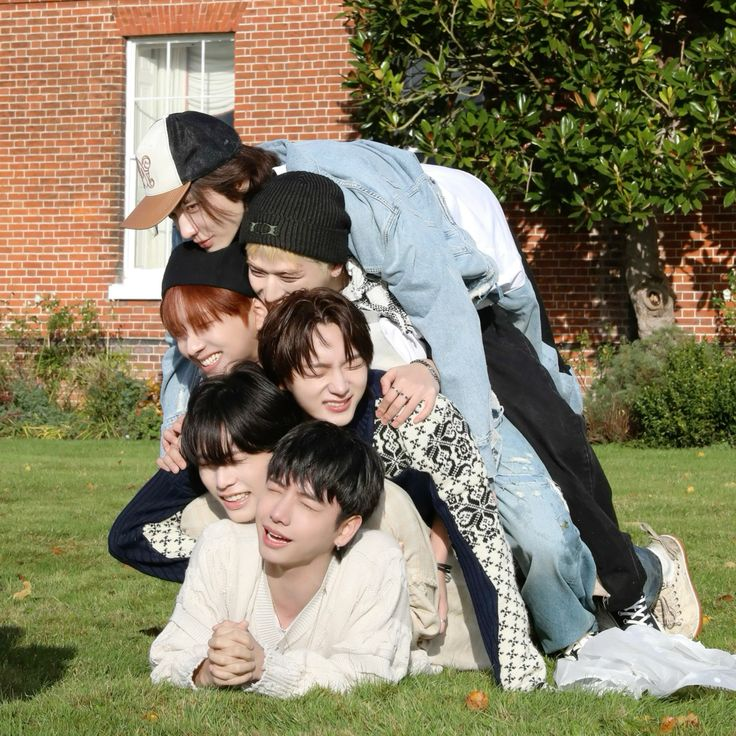
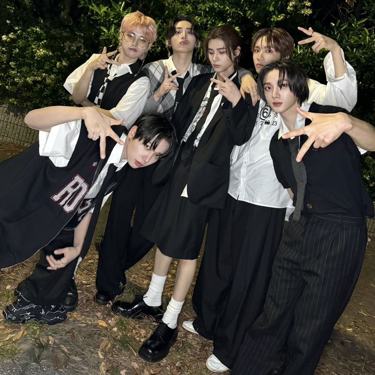

About Me
Halo! Nama saya Nabilah Abdul Rahman, biasa dipanggil Bila. Saya lahir pada 30 September 2007 dan berumur 16 tahun. Hobi saya adalah menggambar, mendengarkan lagu, dan fangirling over BOYNEXTDOOR. Saya merupakan seorang siswa di SMAN 3 Kota Serang dan duduk di bangku kelas 11.
Saya suka menggambar sejak SD, namun saya mulai mengasahnya saat kelas 7 SMP. Sekarang hobi tersebut sudah tidak sering saya lakukan karena berkurangnya minat saya terhadap menggambar. Tetapi saya terkadang menggambar jika saya tidak ada kegiatan.
Saya menyukai boy band asal Korea bernama BOYNEXTDOOR. Grup ini baru debut pada 30 Mei 2023 lalu. BOYNEXTDOOR terdiri dari 6 member, yakni Sungho, Riwoo, Jaehyun, Taesan, Leehan, dan Woonhak. Salah satu anggota yang saya sukai adalah Park Sungho yang merupakan anggota tertua di grup tersebut. Saya sangat suka dengan lagu terbaru mereka yang dirilis pada 15 April 2024 yang berjudul " So let's go see the stars ".




Pendidikan

Sekolah Dasar
Saya bersekolah dasar di SABIS International School kemudian pindah ke SDIT Al-Izzah, Serang Banten

Sekolah Menengah Pertama
Saya bersekolah di Ibad Ar-Rahman Islamic Boarding School di Pandeglang, Banten

Sekolah Menengah Atas
Saya bersekolah di SMAN 3 Kota Serang dan sekarang sedang duduk di bangku kelas 11